1926—The New-Way Course in Fashionable Clothes-Making
Lesson 38A—Study of the Human Figure, the Silhouette
A Study of the Human Figure
To the artist, the human figure is the most beautiful in the world. The designer of clothes must take this attitude also, if she wishes her creations to be truly beautiful. There are no straight lines in the body. All are gently curved. And all parts of the body bear certain general relations to one another.
For the study of design, you must know the figure, its contour, its curves, its general outline. You must know the relation of the form to the gown you are draping—the form must be your background, your landscape, your canvas, your very foundation. An invariable rule of design is that all lines must closely follow the lines of the body.
Artistic design employs both straight and curved lines. Their arrangement determines the expression of the garment. Straight lines lend dignity; curved lines soften the contour and lend the charm of variety. Gowns designed for street wear and for party wear should have entirely different lines. For the street dress, dignity is desired and straight, severe lines should be used to express this dignity. For the evening gown one chooses soft, curved lines that express life, joy, pleasure.
In well-made, well-designed clothes no lines are in variation or contradiction to the contour of the form, whether made by seam or decoration, all divisions of the garment should be made in relation to the structural parts and areas. Decoration should always be placed at the points of support.
Certain general rules may be applied to the designing of clothes for the human figure. For instance, stripes, plaids, checks, spots and figures of any kind always draw attention to the dimensions. And, of course, the stout woman always looks larger if her surface is marked off into many spaces. Similarly, the thin woman appears thinner if her body is marked off into very few spaces.
The long, straight lines may be depended upon to lend dignity and severity to a garment. Curved lines may be depended upon to express joy and gladness. But straight or curved, the lines must harmonize with the lines of the body. The use of horizontal and vertical lines in combination rivets the attention; the flow of liens growing out of each other express unity.
We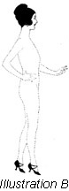 find, t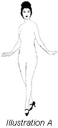hen, that the whole subject of design evolves into one fundamental principle; the arranging of lines and shapes to harmonize with the principles of rhythmic unity, variety and balance. And in order to do this one must first study the lines and general contour of the body. In Illustrations A and B are the human figure shown in front view and in profile. Study these illustrations carefully. Note the complete absence of straight lines—how the body is equally divided into curves. And remember that garments must drape and fall to harmonize with the shape and style of the subject.
But all figures are not average. We are not all of us perfect "thirty-sixes." Some of us are the least bit taller than others. Some of us are inclined to be stout. We all have distinct individuality of form—and this individuality can be marred or "starred" according to the type of styles we design for it.
The Part 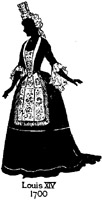That 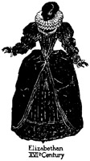the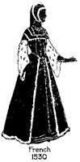 Silhouette Plays
But you are wondering, no doubt, what part the silhouette plays in this development of Fashion. The keynote to correct dress is yourself, you know, your personality. Your figure, the lines of your face and your body, control the lines of your garment. The most carefully constructed and charming garments will fail to become you if they do not harmonize with your individuality, with your peculiarities of figure.
Fashion does not always remain the same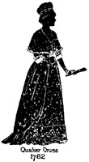. Each season brings forth striking new dress innovations—new colorings, new lines, new draperies. What is in vogue today is cast aside tomorrow as "out-of-date." The problem of the home clothes-maker, therefore, is to create styles that are always becoming, always attractive. And it is here that the value of the silhouette is most strikingly portrayed.
There are certain lines, certain draperies that tend to enhance the natural grace and beauty of the wearer and that emphasize that person's individuality. They are lines which are best fitted for the wearer's particular type of beauty, for her particular figure. And it is the study of the silhouette that reveals these lines, that shows you how to readjust the prevailing mode so that it conforms with the lines of your figure and does justice to your "good points."
I am sure that you are beginning to realize that the study of the silhouette plays a very important part in the study of design. You want to look your very best and it is only by careful study and the learning of any new points, that will help along this line. You want to create dresses that are becoming to you. You want to have people remark about the attractive clothes that you are wearing, and how they are so well fitted to your particular type. Follow carefully the things that "Nu-Way" is telling you and I am sure you will find them valuable steps toward your success as a clothes-maker.
Adapting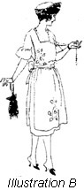 Styles 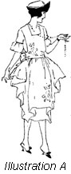to Your Figure
Here is a picture (Illustration A) of a pretty little frock with small pointed tabs adding a touch of trimming at the sides. You would like to have the dress, but let us pretend that you are inclined to be the least bit stout and you do not know whether or not it will be becoming. You know already that the tabs have a tendency to make you appear stouter. So you visualize the same dress without the tabs, as shown in Illustration B.
Now glance at these illustrations and see the same two dresses in silhouette. You can see at once the remarkable difference this one slight change in trimming makes. If you are slender, you will choose the dress shown in Illustration C without hesitation; if you are stout you will choose the one shown in Illustration D. Yet both are developed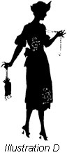 on the same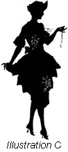 lines and are similarly styled.
You realize, of course, that your own figure must serve as the basis upon which the silhouette is built. Study yourself in the mirror. Find your "good points" and your "bad points." Decide whether you have large hips or small hips, wide shoulders or narrow shoulders. The makers of ready-to-wear clothes pay no attention to your little peculiarities of figure; they strive only for the style effect. That is why the clothes you buy in the shops may look pretty on others but entirely without charm on you. But in the clothes you make yourself you will be able to impart just the right little touches that you silhouette requires.
In clothes-making, excellent workmanship alone is no enough. Nor is the achievement of attractive style enough. But when you have combined excellent workmanship and attractive style with a silhouette that harmonizes with the lines of your figure—then you have achieved the true triumph of artistic clothes-making.
How to Find YOUR Silhouette
Perhaps if you see your own silhouette, you will better understand the significance of it. We have devised a method, after much experimenting, by which you can find your correct silhouette without trouble.
Draw down the blinds in your sewing room, shut all doors, and make the room absolutely dark. It is much better to find your silhouette at night. Light a candle and place it on the edge of the table. The top of the candle must e exactly the same height as your waistline. If the table is too low, place a book or two underneath the candle to bring it up to the correct height.
Now face a blank wall and walk straight away from the candle to a distance twice as great as your own height. For instance, if you are five feet tall, walk ten feet away from the candle. This will throw a shadow of your correct silhouette on the wall. First study it facing the wall, then turn to the side and study your "profile" silhouette. Any little peculiarities of figure will be instantly detected—and it is then your duty to remember these peculiarities when you are planning the style features of your new dress or blouse. Of course you must wear only tights in finding your silhouette, or close-fitting underwear. Do not wear anything that will conceal the true outline of your figure.
In taking your silhouette, if you find that the outline is not clear and sharp, if it is a little blurred or hazy, take a step forward or backward watching the wall carefully and you will invariably find the exact spot to stop. The best results are obtained by pinning a white sheet against the wall. The candle throws a splendid clear-cut shadow against the white background. Remember that the candle must always be in a line with your waist. If it is above or below it will throw a distorted shadow, and you will not get your correct silhouette.
A little study of the "secret of the silhouette" will teach you how to determine instantly just which styles, just which lines, will best become you—or the person for whom you are making the dress. You should have no trouble whatever in adapting prevalent modes to your figure, or in visualizing a dress before it is finished and discovering any little discrepancies in outline that will tend to detract from the grace and charm of your figure.
In these lessons you have learned many new things about design. You now know what an influence historic costumes have had on our modern dresses. It is interesting to trace the influence of historic costumes on our present-day styles. We have studied the lines of the human form and its relation to design. We have learned something of the silhouette and the important part it plays in design.
We now have a little better idea about the meaning of design.
We have a little better foundation upon which to build, so in the next lessons on design we will take up the theory as well as the practical application of design, with is relationship to modern dress.
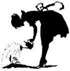Lessons 37 and 38
Questions
- Is the woman who is ruled by Fashion always considered well dressed?
- To what period can the tendency toward capes or dresses be traced?
- What were the distinguishing features of the fifteenth century costumes.
- Why is it necessary to study the human figure in connection with dress design?
- Are the body lines straight or curved?
- Of what value to you is the study of the silhouette?
- How can you find your correct silhouette?
- Is it the trimming which changes from year to year, or is it the silhouette?